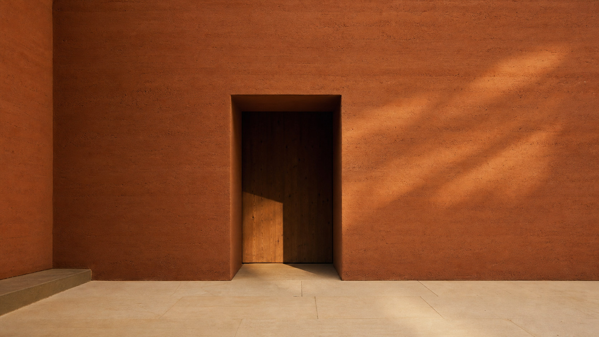

Write to the studio.
Letters are answered on Fridays from the studio in Konya. Commissions open one quarter ahead of each new volume. Subscriptions ship from the moulding shed when the ink has set.

A studio at the back of the plateau.
Letters
studio@marn.earth
Replies issued on Fridays.
Studio
Sokak 4, Sille,
Konya, Türkiye
Open by appointment, Wednesday to Saturday.
Commissions
commissions@marn.earth
One quarter lead, no exceptions.
Field Journal
subscribe@marn.earth
Four volumes a year, surface mail.
Agenda
| October | Sediment glossary, the next volumeField journal, dispatch |
|---|---|
| November | Plateau commission, private residenceSille, in construction |
| December | Conversation at İstanbul Tasarım BienaliPublic, by invitation |
A note
We do not pitch. We do not court. A wall finds its reader the way a seam finds its true line, slowly, and only once.
Write when the brief is settled.